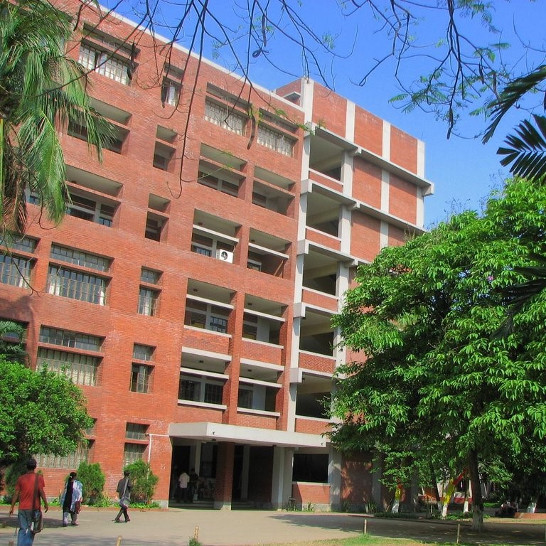
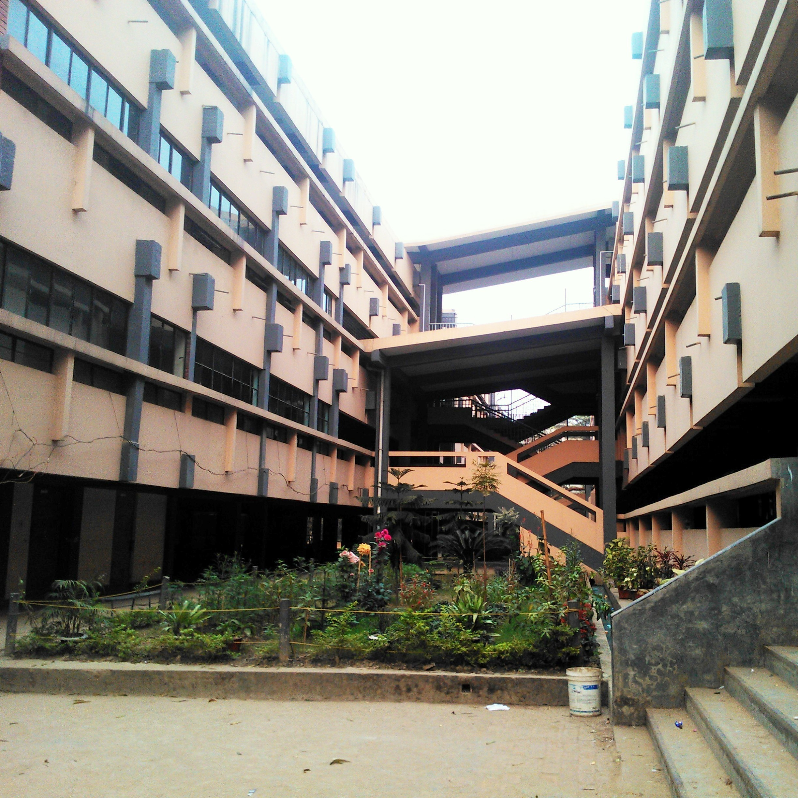

Education

Bachelor of Science in Engineering (EEE)
Islamic University of Technology (IUT)
2016 - 2019 | Admission Rank: 70 | Recipient of OIC Scholarship
I got admitted to Islamic University of Technology in the year 2016. I graduated with Bachelor of Science in Engineering in Electrical and Electronic Engineering. Not only did this institution encourage me to thrive in my academics, but it also allowed me to develop my self in every way I could. I have excelled both in curricular and extra-curricular activities. Main takeaways to my university stay are Determination, Hard Work, Research Methodology and Leadership. See My Academic Portfolio
Know More About Islamic University of Technology
Higher Secondary School Certificate
Notre Dame College
2015
Notre Dame College helped me develop myself as a prosperous academic. It made me improve equipped and willing to accomplish what I had planned for. Educational development and also progress as a human being are my key lessons to be learnt from this institute. This institute has encouraged me to remain inclined to what I am striving for.
Know More About Notre Dame College Secondary School Certificate
St. Joseph Higher Secondary School
2013
St. Joseph Higher Secondary School has helped me grow up as a human. From childhood to adulthood, I have flourished with the skills required not only to be a good academic, but also to be a fantastic human being.Morning shows the day - St. Joseph is the Morning that is running my day.
Know More About St. Joseph Higher Secondary School 